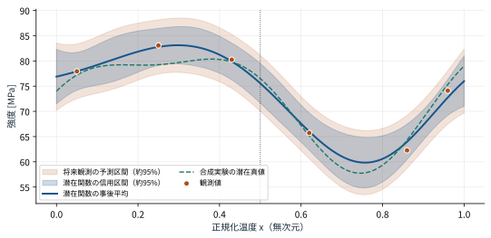
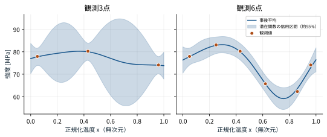
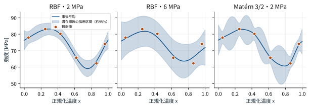

第4章 ガウス過程による予測
学習目標 観測からGPの事後平均と分散を計算し、潜在強度と次の測定値の区間を区別する。
この章では、測っていない位置の予測値と、その不確かさがどこから生まれるかを学びます。観測点と予測点の共分散を使って事後平均・共分散を導き、潜在関数と一回の将来観測の区間を描き分けます。最後に、観測点数・ノイズ・カーネルを変えて予測を比較します。
4.1 Pythonで予測を描く
仮想の材料試験で、処理温度 \(T\) を 140〜180 °C の間で変え、引張強度を測ります。この例では温度の数値を °C で表して \(x=(T-140)/40\) と変換します。\(x=0.5\) は 160 °C です。強度の単位にはメガパスカル（MPa）を使います。合成データには標準偏差 \(2\,\mathrm{MPa}\) の独立な測定ノイズを加えています。
第4章のNotebookで先頭から実行できます。この節では、6件の測定結果をモデルに渡し、学習し、未測定の温度で予測します。grid はグラフを描くための入力です。学習に使うのは train_x と train_y の組です。
| コード | サイズ | 表すもの |
|---|---|---|
train_x |
\((6,1)\) | 測定した6条件の正規化温度 |
train_y |
\((6,1)\) | 各条件で実際に得た強度 |
train_yvar |
\((6,1)\) | 各観測に指定した既知のノイズ分散 \(4\,\mathrm{MPa}^2\) |
grid |
\((301,1)\) | 予測・作図用の温度。追加の実測は行わない |
import torch
from robotorchan.models import SingleTaskGP
from experiment import DTYPE, observations, setup
setup()
train_x, train_y, train_yvar = observations()
model = SingleTaskGP(train_x, train_y, train_Yvar=train_yvar)
model.fit()
model.eval()
grid = torch.linspace(0, 1, 301, dtype=DTYPE).unsqueeze(-1)
with torch.no_grad():
latent = model.posterior(grid)
measurement = model.posterior(grid, observation_noise=True)
print(latent.mean[150, 0].item()) # x = 0.50 の事後平均 [MPa]train_Yvar には分散を渡します。観測ノイズの標準偏差が \(2\,\mathrm{MPa}\) なら、入力値は \(4\,\mathrm{MPa}^2\) です。このモデルでは既知の観測分散を使い、カーネルなどのハイパーパラメータを fit() で推定します。

図 4.1 の黒い縦線は \(x=0.50\)（160 °C）です。まず縦線と青い中心線が交わる所を見ます。ここが、測定ノイズを加える前の強度 \(f(x)\) の事後平均です。次に、その位置で二つの帯の上下端を比べます。
この温度での事後平均は、どちらも 75.56 MPa です。
| 予測する量 | 標準偏差 [MPa] | 点ごとの約95%区間 [MPa] |
|---|---|---|
| 潜在強度 | 2.00 | 71.63 ～ 79.49 |
| 新しい1回の測定値 | 2.83 | 70.01 ～ 81.11 |
青い帯は「この温度での潜在強度」、橙の帯は「この温度で取り直したときの1回の測定値」についての区間です。第4.4節では、この二つの分散の差が測定ノイズの分散 \(4\,\mathrm{MPa}^2\) になる理由を導きます。各帯は温度ごとに計算した区間です。例えば \(x=0.50\) と \(x=0.51\) の未知の強度を同時に考えるときは、その二点の依存関係も使います。次節では、そのための共分散を含めた分布に進みます。
4.2 観測モデルと同時正規分布
第2章の二変量正規分布では、一つの量を知ったときの残りの量を予測しました。第3章のカーネル行列では、そのための共分散を複数の入力位置で作りました。ここからは、条件側に測定ノイズを含めて同じ考え方を使います。
独立な観測誤差を仮定し、観測 \(i=1,\ldots,n\) を
\[ y_i=f(x_i)+\varepsilon_i,\qquad \varepsilon_i\sim\mathcal{N}(0,\tau^2) \]
と書きます。\(x_i\) は入力、\(f(x_i)\) は測定誤差を加える前の潜在強度、\(y_i\) は観測強度です。\(\varepsilon_i\) は互いに独立で \(f\) からも独立、\(\tau^2\) は観測分散です。この節では等分散とします。既知の分散が入力ごとに異なる場合は、以下の \(\tau^2 I_n\) をそれらの分散を並べた対角行列に置き換えられます。
ガウス過程（Gaussian process、GP）\(f\sim\mathcal{GP}(m,k)\) は、任意の有限個の入力での関数値が同時正規分布に従うという仮定です。\(m(x)\) は事前平均、\(k(x,x')\) は位置 \(x\) と \(x'\) の関数値の事前共分散です。ここでは有限集合上での計算だけを使います (Rasmussen と Williams 2006年, sec. 2.2)。
観測入力を \(X=(x_1,\ldots,x_n)\)、予測入力を \(X_*=(x_{*1},\ldots,x_{*r})\) とし、\(I_n\) を \(n\) 次の単位行列とします。
| 記号 | 定義 | 形 |
|---|---|---|
| \(\mathbf y,\mathbf f_*\) | 観測値 \(y_i\) と、予測位置での潜在値 \(f(x_{*j})\) を並べた列ベクトル | \(n\times 1,\ r\times 1\) |
| \(\mathbf m_X,\mathbf m_*\) | \(m\) を観測位置、予測位置で評価した列ベクトル | \(n\times 1,\ r\times 1\) |
| \(K_{XX}\) | 要素 \((i,j)\) が \(k(x_i,x_j)\) の観測位置間カーネル行列 | \(n\times n\) |
| \(K_{*X}\)、\(K_{X*}\) | 予測と観測の間の共分散、\(K_{X*}=K_{*X}^{\mathsf T}\) | \(r\times n,\ n\times r\) |
| \(K_{**}\) | 要素 \((i,j)\) が \(k(x_{*i},x_{*j})\) の予測位置間カーネル行列 | \(r\times r\) |
| \(A\) | \(K_{XX}+\tau^2 I_n\)。観測強度の周辺共分散 | \(n\times n\) |
観測によって知りたいのは \(\mathbf f_*\) です。まだ観測していない段階で \(\mathbf y\) と \(\mathbf f_*\) を一緒に並べると、独立ノイズの和と多変量正規分布の性質から
\[ \begin{bmatrix}\mathbf y\\ \mathbf f_*\end{bmatrix} \sim \mathcal{N}\!\left( \begin{bmatrix}\mathbf m_X\\ \mathbf m_*\end{bmatrix}, \begin{bmatrix} A & K_{X*}\\ K_{*X} & K_{**} \end{bmatrix} \right). \tag{4.1}\]
ノイズは \(\mathbf y\) 側にだけ加わるため、左上のブロックに \(\tau^2 I_n\) が入ります。潜在値と測定ノイズは独立なので、非対角ブロックは変わりません。
4.3 条件付き正規分布から事後分布を導く
\(A\) が正定値で逆行列が存在するとします。\(K_{XX}\) が半正定値で \(\tau^2>0\) ならこの条件を満たします。観測との相関を取り除くために、中心化した潜在値から、観測の線形結合を引きます。
\[ \mathbf u=\mathbf f_*-\mathbf m_* -K_{*X}A^{-1}(\mathbf y-\mathbf m_X). \]
この \(\mathbf u\) は平均ゼロで、観測との交差共分散は
\[ \mathrm{Cov}(\mathbf u,\mathbf y) =K_{*X}-K_{*X}A^{-1}A=0 \]
となります。同時正規なベクトルでは、交差共分散がゼロなら独立です。したがって、\(\mathbf u\) は \(\mathbf y\) を見た後も平均ゼロです。\(L=K_{*X}A^{-1}\) と書くと、残差の共分散は
\[ \mathrm{Cov}(\mathbf u)=K_{**}-L K_{X*}-K_{*X}L^{\mathsf T} +L A L^{\mathsf T}=K_{**}-K_{*X}A^{-1}K_{X*}. \]
\(\mathbf u\) の定義を \(\mathbf f_*\) について解き、既知になった \(\mathbf y\) を代入すると
\[ \begin{aligned} \boldsymbol{\mu}_* &= \mathbf m_*+K_{*X}A^{-1}(\mathbf y-\mathbf m_X),\\ \Sigma_* &= K_{**}-K_{*X}A^{-1}K_{X*},\\ \mathbf f_* \mid X,\mathbf y,X_* &\sim \mathcal N(\boldsymbol{\mu}_*,\Sigma_*). \end{aligned} \tag{4.2}\]
事後平均は、観測が事前平均からどれだけずれたかを、共分散と観測精度で重み付けして補正します。事後共分散は、観測で説明できた共分散を事前の共分散から引いたものです。ハイパーパラメータを固定しているため、\(\Sigma_*\) は観測位置とノイズ分散に依存し、実際の観測値 \(\mathbf y\) には依存しません。\(\mathbf y\) を使ってハイパーパラメータを推定する実行例では、推定値を通じて影響します。
二つの点を紙の上で追う
単位のない検算例を使用します。\(X=(0,1)\)、\(\mathbf y=(1,-0.5)^{\mathsf T}\)、\(X_*=(0.25,0.75)\) とし、零平均と既知の観測分散 \(\tau^2=0.1\) を指定します。RBFカーネルは信号分散 \(1\)、長さ尺度 \(\ell=0.5\) とします。
\[ k(x,x')=\exp\!\left(-\frac{(x-x')^2}{2\ell^2}\right),\qquad A=\begin{bmatrix}1.1&e^{-2}\\e^{-2}&1.1\end{bmatrix}. \]
\(K_{X*}\) の対角成分は \(e^{-1/8}\)、非対角成分は \(e^{-9/8}\)、\(K_{**}\) の非対角成分は \(e^{-1/2}\) です。この二点の場合は \(a=1.1\)、\(c=e^{-2}\) と置き、逆行列を紙の上で確かめられます。
\[ A^{-1}=\frac{1}{a^2-c^2} \begin{bmatrix}a&-c\\-c&a\end{bmatrix}. \]
最初の予測点の平均は、\([e^{-1/8},\,e^{-9/8}]\) に \(A^{-1}(1,-0.5)^{\mathsf T}\) を掛けて得られます。二点目は共分散ベクトルの成分を入れ替えます。式 4.2 に同じ行列を入れれば共分散も求まります。\(\Sigma_*\) の対角は各点の分散、非対角は二点の共分散です。
事後平均は \((0.6780, -0.1894)^{\mathsf T}\)、事後共分散の対角成分はともに 0.2489、非対角成分はともに 0.1780 でした。非対角成分には二つの未知点の依存関係が残ります。倍精度で手計算の式と公開APIを比較した最大絶対差は、この実行で平均 0、共分散 1.1e-16 でした。
NotebookではPyTorchの torch.linalg.cholesky で \(A=CC^{\mathsf T}\) と分解し、torch.cholesky_solve で \(A Z=B\) を解きます。平均の計算では \(B=\mathbf y-\mathbf m_X\)、共分散の計算では \(B=K_{X*}\) です。この手順では逆行列を明示的に作りません。右辺ごとに三角行列の連立方程式に帰着します。api.mean が \(\boldsymbol{\mu}_*\)、api.variance が \(\Sigma_*\) の対角、api.distribution.covariance_matrix が \(\Sigma_*\) 全体に対応します。この対応を確かめてから標準偏差へ変換すると、図の帯と式の関係を追いやすくなります。密な場合、\(n\) 点でのCholesky分解には概ね \(O(n^3)\) の演算と \(O(n^2)\) の行列記憶が必要です (Rasmussen と Williams 2006年, 第2章第2節)。倍精度の密行列1枚だけでも、\(n=1000\) で約8 MB、\(n=10000\) で約800 MBです。学習中は分解・勾配用などの行列も必要になり、パラメータ更新のたびに計算が繰り返されます。CPU上の小規模な単出力回帰なら数百点から始めやすく、数千点では実機で学習時間とメモリを測り、数万点では誘導点を使う疎GPなども比較します。境目はデバイス、dtype、カーネル、ソルバー、再学習頻度で変わります。
4.4 将来観測の予測区間
予測位置 \(x_*\) の潜在値の周辺事後分散を \(\sigma_*^2\) とし、その位置で今後一度測る値を \(y_{\mathrm{new}}=f(x_*)+\varepsilon_{\mathrm{new}}\) とします。独立な平均ゼロ・分散 \(\tau_{\mathrm{new}}^2\) の正規ノイズを加える場合、
\[ f(x_*)\mid \mathbf y\sim\mathcal N(\mu_*,\sigma_*^2),\qquad y_{\mathrm{new}}\mid \mathbf y\sim\mathcal N(\mu_*,\sigma_*^2+\tau_{\mathrm{new}}^2) \tag{4.3}\]
です。ここでは \(X,X_*\) とハイパーパラメータを固定しているため、条件の表示を省きました。各区間はその分布の平均に対しておおむね「\(\pm 1.96\) × 標準偏差」です。\(1.96\) は標準正規分布の累積確率 \(0.975\) の分位点の近似です。分散は足せますが、標準偏差の加算にはなりません。
この章のコードでは model.posterior(grid) が潜在関数、model.posterior(grid, observation_noise=True) が観測ノイズを含む事後分布を返します。今回のように指定した既知分散が一定なら、新しい位置でも同じ分散になります。測定精度が条件によって変わる場合は、新規入力に対応した分散をモデル化するか、選んだモデルの公開APIで明示できるかを確認します。出力を標準化したモデルへ予測分散を明示的に渡す場合は、入力する分散の尺度も確認します。
同じ95%でも、何に対する確率か
| 区間 | 何を囲むか | 95%の意味 |
|---|---|---|
| 頻度論の信頼区間（confidence interval） | 固定された未知の量。例として温度を一つ固定したときの平均強度 | 同じ設計でデータを取り直し、同じ作り方で区間を求め続けると、約95%の区間が真値を覆う |
| ベイズ信用区間（credible interval） | 観測後の未知量。図の青い帯なら温度 \(x_*\) の潜在強度 | 観測データと採用したモデルの下で、その温度の潜在強度が区間に入る事後確率が約95% |
| 予測区間（prediction interval） | 次に得られる観測値。図の橙の帯なら試験片一つの強度 | この章のベイズ事後予測では、同じ条件の次の測定値が区間に入る確率が約95%。頻度論で作る場合は、将来観測を含めた反復での被覆率で評価する |
この章の信用区間と事後予測区間は、どちらも温度を一つ固定した点ごとの区間です。曲線全体が帯に入る確率も95%と読みたい場合には、同時区間が必要です。また、採用したカーネルやノイズの仮定が違えば、実測での被覆率も変わります。
4.5 周辺尤度でハイパーパラメータを選ぶ
カーネルの長さ尺度、信号分散、平均、観測ノイズなどの設定値をまとめて \(\theta\) と書きます。「周辺」尤度は、潜在関数値 \(\mathbf f_X\) を積分した結果です。ガウス観測では 式 4.1 の \(\mathbf y\) だけを取り出しても得られます。\(\mathbf r_\theta=\mathbf y-\mathbf m_{X,\theta}\)、\(A_\theta=K_{XX,\theta}+\tau_\theta^2 I_n\) と置くと
\[ \log p(\mathbf y\mid X,\theta) =-\frac12\mathbf r_\theta^{\mathsf T}A_\theta^{-1}\mathbf r_\theta -\frac12\log |A_\theta|-\frac{n}{2}\log(2\pi). \tag{4.4}\]
第1項は観測と平均のずれを共分散で測ったもの、第2項は正規分布の正規化から生じる項、第3項は \(\theta\) を動かしたときに一定です。\(A_\theta=CC^{\mathsf T}\) なら \(\log|A_\theta|=2\sum_{i=1}^{n}\log C_{ii}\) と計算できます。ノイズを推定するなら \(\tau_\theta^2\) も \(\theta\) の一部です。既知の分散を渡す場合は、その値を固定します (Rasmussen と Williams 2006年, 第2章第3節および第5章第4節)。
教材の SingleTaskGP.fit() はBoTorchの公開学習機能に周辺尤度を渡します。モデルの目的関数には設定されたパラメータ事前分布の項も入り得ます。式 4.4 はガウス観測のデータ項です。二点の照合では \(\theta\) を人が指定して固定し、冒頭の実行ではデータから推定しました。後者の帯は推定した \(\widehat\theta\) を条件として計算したものです。\(\theta\) の不確かさまで含めるには \(p(\theta\mid X,\mathbf y)\) にわたる予測分布の積分が必要です。
4.6 観測とモデルの仮定を変えてみる
次の二つの図では、事前平均を \(70\,\mathrm{MPa}\)、信号標準偏差を \(12\,\mathrm{MPa}\)、長さ尺度を正規化温度で \(0.20\) に固定します。学習を繰り返すと複数のパラメータが同時に変わるため、ここでは各変更の影響を追えるように設定値を固定しています。

同じ事前仮定と既知ノイズの下で観測を加えると、条件付き分散は各位置で増えません。条件付けをもう一度行うと、追加観測との交差共分散に由来する半正定値の項が引かれるためです。新しい観測と相関の弱い位置では変化も小さくなります。推定した長さ尺度を新しいデータで学習し直した場合は、各位置の帯が単調に狭くなるとは限りません。

中央は同じ強度を観測したまま、測定の精度を低く見積もっています。\(A\) の対角に入る分散が大きいため、観測から事前予測を補正する効果が弱まります。右は近傍の依存関係の形を変えた例です。RBFとMatérnは同じ長さ尺度を設定しても同じ共分散関数にはなりません。図のこの比較は指定した設定での形の違いを示しています (Rasmussen と Williams 2006年, sec. 4.2)。
4.7 適用条件とよくある失敗
- 同じ入力が繰り返される場合。 独立ノイズの分散が正なら、観測共分散の対角項が特異性を避ける助けになります。厳密な無雑音モデルで同じ入力を重複させると行列が特異になり得ます。計算用のjitterは分解を安定させる対角補正で、測定分散とは役割が異なります。
- 入出力の単位が変わる場合。 強度を \(y'=(y-a)/s\) に標準化すると、分散は \(s^2\) で割ります。この章では公開
posteriorが返す強度尺度で図を作り、事後平均、分散、観測値を揃えています。 - モデルと実験が合わない場合。 観測のない温度帯で狭い帯が出ても、採用したカーネルを条件にした結果です。急激な相変化や測定機器の偏りがある場合は、反復や保留データで残差と区間の被覆率を調べます。
- 観測値の説明と候補の選択。 事後平均や区間は次の意思決定に使う材料です。測定すべき温度は、最高強度を狙うか、別の温度帯の予測を改善したいかで変わります。
章末演習
- 確認。 ある温度で潜在強度の事後標準偏差が \(3\,\mathrm{MPa}\)、次の測定のノイズ標準偏差が \(2\,\mathrm{MPa}\) です。次の測定値の標準偏差と約95%予測区間の半幅を求めてください。
- 操作。 二点の検算で \(\tau^2\) を \(0.1\) から \(0.5\) に変えます。どこを書き換えると検算が成立しますか。予測平均と分散の変化を説明してください。
- 操作。 同じ6観測を使い、固定したMatérn 3/2の長さ尺度を \(0.10\) と \(0.35\) に変えてください。観測の少ない温度帯の区間を比べ、変化の理由を説明してください。
- 発展。 標準偏差6 MPaでデータを再生成してください。「観測値を固定してノイズの仮定を変える」図との違いを説明してください。
まとめと次章
GP回帰では、共分散を手掛かりに観測と未知点を結び、観測で説明された成分を事前の不確かさから差し引きます。第5章の候補提案では同じGPの潜在事後平均 \(\mu\) と標準偏差 \(\sigma\) を使い、強度を改善する見込みを候補ごとに評価します。回帰と周辺尤度の詳しい出典は (Rasmussen と Williams 2006年)、BoTorchとの接続は (Balandat ほか 2020年; robotorchan contributors 2026年) を参照してください。